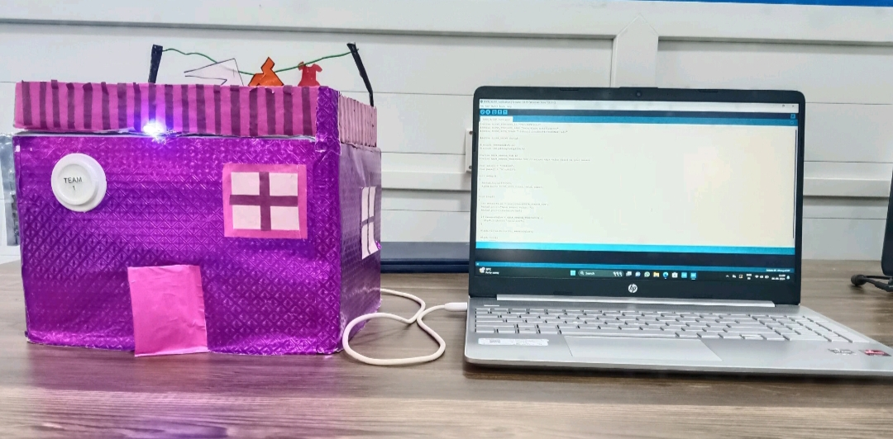

Type: Hardware
Our team of three developed a project called Rain Alert Notification. This system uses a raindrop sensor to detect rainfall and sends an automated email notification to a designated email address connected via Wi-Fi. The alert is triggered instantly upon rainfall detection, making it a proactive solution for rain monitoring and alerting.
Type: Software
"Pet Paws" is a front-end shopping page designed for pet care products, offering a user-friendly interface where pet owners can browse a range of products tailored for their pets. From food and grooming items to accessories and toys, the page provides organized categories and detailed product descriptions, creating an engaging shopping experience. Though purely a front-end development, "Pet Paws" showcases essential e-commerce functionalities like product displays, search options, and filtering. Users can explore product details and simulate adding items to a cart, although actual purchasing functionality is not included in this version.
View on GitHubType: Software
This Coffee Landing Page is a visually appealing and fully responsive web page created using HTML, CSS, and JavaScript. Designed to attract coffee lovers, it features a modern layout with rich imagery, smooth scrolling, and interactive elements. The page highlights coffee products, offers, and brand values with elegant typography and warm color tones. CSS enhances the visual aesthetics, while JavaScript adds interactivity like animated buttons, sliders, or a sticky navbar. It is optimized for all devices and provides a seamless user experience. This landing page is perfect for promoting a coffee brand, showcasing products, or collecting customer leads effectively.
View on GitHub